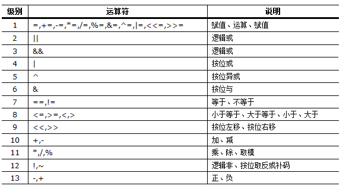

awk 是什么
awk是linux环境下的一个命令行工具，但是由于awk强大的能力，我们可以为awk工具传递一个字符串，该字符串的内容类似一种编程语言的语法，我们可以称其为Awk语言，而awk工具本身则可以看作是Awk语言的解析器。就好比python解析器与Python语言的关系。我们一般使用awk来做什么，awk又适合做什么工作呢。由于awk天生提供对文件中文本分列进行处理，所以如果一个文件中的每行都被特定的分隔符(常见的是空格)隔开，我们可以将这个文件看成是由很多列的文本组成，这样的文件最适合用awk进行处理，其实awk在工作中很多时候被用来处理log文件，进行一些统计工作等。
awk 命令的一般组成
awk最常用的工作一般是遍历一个文件中的每一行，然后分别对文件的每一行进行处理，一个完整的awk命令形式如下：
1 | awk [options] 'BEGIN{ commands } pattern{ commands } END{ commands }' file |
其中options表示awk的可选的命令行选项，其中最常用的恐怕是 -F 它指定将文件中每一行分隔成列的分隔符号。而紧接着后面的单引号里面的所有内容是awk的程序脚本，awk需要对文件每一行分割后的每一列做处理。file则是awk要处理的文件名称。让我们通过demo来体会awk的功能。
awk 对每一行进行分割处理
1 | echo '11 22 33 44' | awk '{print $3" "$2" "$1}' |
我们将字符串 11 22 33 44 通过管道传递给awk命令，相当于awk处理一个文件，该文件的内容就是 11 22 33 44 上面的命令中我们并没有添加 -F 指定分割符号，实际上默认情况下awk使用空格分割每一行，如果需要指定别的字符则使用-F显示指定。上面的命令是将 11 22 33 44 通过空格(不管列之间有多少个空格都将当作一个空格处理)分割成4列，在awk中有一种通过 $数字 引用的变量，这种变量引用的内容就是当前行中分割的每一列的内容，数字的序号从1开始，例如$1表示第1列的内容，$2表示第二列，以此类推。$0 表示当前整行的内容。print是awk的内置函数，用于打印出变量的值。 而我们在$3 $2 $1 之间添加了用双引号引起来的空格，如果没有，则这些变量的值打印出来会连在一起。这里的awk命令中{}里面的内容实际上是我们上面完整模式的中间部分，我们省略了上面的BEGIN块，END块，并且中间的程序块我们也省略掉了pattern部分，也就是如果不添加BEGIN或者END说明那么该程序块就是上面完整模式中的中间的那个程序块，该中间的程序块所执行的操作就是循环处理文件内容的每一行，如果文件有10行，那么中间的程序块要运行10次，每一次处理一行的内容，并且处理完当前行之后，下次循环会自动依次处理接下来的行内容。
我们来看看，如果有两列是什么效果呢，例如：
1 | echo -e '11 22 33 44\naa bb cc dd' | awk '{print $3" "$2" "$1}' |
注意这里 echo 命令使用了 -e 选项的目的就是为了保持字符串中的\n的格式能够生效，否则该换行将被忽略。那么上面的命令是如何执行的呢，我们模拟一下awk的执行过程，首先awk读取第一行的内容，使用空格分隔该行中的列，并将字符串11赋值给$1，22赋值给$2，33赋值给$3，44赋值给$4。然后通过print打印出来。接着读取第二行的内容，同样执行上面的操作。
使用parttern部分
我们已经学习了awk最简单的命令，下面我们再加一点东西进去，在程序块的前面添加pattern部分，例如：
1 | echo -e '1 2 3 4\n5 6 7 8' | awk '$1>2{print $3" "$2" "$1}' |
该程序与上面的程序几乎一样，只不过我们在程序块前面添加了 $1>2 表示如果当前行的第1列的值大于2则处理当前行，否则不处理。说白了pattern部分是用来从文件中筛选出需要处理的行进行处理的，如果没有则循环处理文件中的所有行。pattern部分可以是任何条件表达式的判断结果，例如>，<，==，>=，<=，!= 同时还可以使用+，-，*，/运算与条件表达式相结合的复合表达式，逻辑 &&，||，! 同样也可以使用进来。另外pattern部分还可以使用 /正则/ 选择需要处理的行。
awk 的BEGIN语句块
BEGIN语句块是在匹配文件第一行之前运行的语句块。由于是匹配第一行之前运行，实际上在BEGIN语句块中 $n 是不可用的。一般情况下可以在BEGIN语句块中做一些变量(awk中可以自定义变量，直接为一个变量赋值就定义了一个变量，awk中没有专门定义变量的关键字)初始化的工作，以及一些只需要在开始仅打印一次的输出信息(例如输出表的表头)。例如：
1 | echo -e '1 2 3 4\n5 6 7 8' | awk 'BEGIN{print "c1 c2 c3";print ""}{print $3" "$2" "$1}' |
注意一个语句块(花括号包围)中可以有多条语句，使用分号隔开，这与C语言一样。如果需要单独打印空行，需要使用 print "" 我们上面就实现了输出表头的效果。
awk 的END语句块
END语句块是在awk循环执行完所有行的处理之后，才执行的，与BEGIN一样，END语句块也只执行一次，我们看看完整的例子。
1 | echo -e '1\n2\n3' | awk 'BEGIN{print "begin"}{print $1}END{print "end"}' |
awk定义变量对列求和
test.txt 的内容如下：
1 | 11 22 33 |
1 | awk 'BEGIN{sum=0}{sum+=$1}END{print sum}' test.txt |
首先在BEGIN语句块中为变量sum赋值0，然后在循环语句块中将每一行的第1列加到sum中，当文件的所有行全部循环处理完成之后，打印出sum变量的值。当然这个例子中BEGIN语句块是可以省略的，我们可以直接在循环语句块中使用sum变量，此时sum第一次使用，该变量会自动被建立，默认的初始值是0。
awk中的判断语句
awk的所有语句块中都可以使用判断语句，其判断语句语法与C语言一样。
//test.txt内容如下
1 | 1 2 3 |
1 | awk '{if($1%2==0)print $1" "$2" "$3}' test.txt |
awk中的循环
while循环
1 | awk 'BEGIN{count=0;while(count<5){print count;count ++;}}' |
可以看出awk的一个语句块中可以有比较复杂的复合语句，其使用与C语言几乎差不多，多条语句之间用分号隔开，复合语句块用花括号括起来做分隔。
do..while循环
1 | awk 'BEGIN{count=0;do{print count;count++}while(count<5)}' |
for 循环
1 | awk 'BEGIN{for(count=0;count<5;count++)print count}' |
可以看到这几种循环的形式与C语言是一样的，对于我们理解没有任何障碍。awk中也使用break退出循环，使用continue跳过本次循环，其含义与C语言一样。
使用数组分组求和，for..in循环
awk中的数组基本上可以看作是字典，看下面的例子：
test.txt的文件内容
1 | zhangsan 2 3 |
将所有第一列相同的分成一个组，并将该组中的第二列求和。
1 | awk '{sum[$1]+=$2}END{for(k in sum)print k" "sum[k]}' test.txt |
这个例子里面使用了for..in循环来遍历数组的key，同时通过key来得到数组的值。对于key不是数字的数组，是不能通过普通的for循环来以数字索引访问数组元素的。我们可以通过length()函数来获得数组的元素个数，例如length(array)
awk 中使用shell变量值
有的时候我们在shell中计算出来的变量值需要被awk命令使用，我们当然不能在awk中直接使用 $VAR，因为美元符号在awk中本来就是特殊符号，在awk中可以使用 $n 引用当前行的第n列的值，所以直接这么使用是不行的，awk提供了一个选项 -v 来指定变量，在awk中有两种变量，一种是 $n 形式的变量，这个是在循环文件的行的时候，用来引用当前行的第n列的值，还有一种变量，不用定义可以直接使用，不需要用美元符号来引用。下面看看shell中的变量值如何在awk中使用：
1 | a=22 |
可以看到我们只需要在使用awk的时候通过 -v 指定awk中将会用到的变量即可，而变量值则可以通过引用shell变量得到，也就是说我们只能在awk的options部分引用shell的变量，在awk的语句块中使用美元符号引用变量会被awk解析成自己的变量而不是shell的变量。
awk 中的操作符与优先级列表

awk 的内置函数
awk定义了很多内置函数，下面我们根据函数类型列出常用的函数，下面的函数只是一部分，完整的函数列表则需要查阅awk的官方文档。
算术：
atan2(y,x)返回 y/x 的反正切cos(x)返回 x 的余弦；x 是弧度sin(x)返回 x 的正弦；x 是弧度exp(x)返回 x 幂函数log(x)返回 x 的自然对数sqrt(x)返回 x 平方根int(x)返回 x 的截断至整数的值rand()返回任意数字 n，其中 0 <= n < 1srand([expr])将 rand 函数的种子值设置为 Expr 参数的值，或如果省略 Expr 参数则使用某天的时间。返回先前的种子值。
字符串：
gsub(reg,str1,str2)使用str1替换所有str2中符合正则表达式reg的子串sub(reg,str1,str2)含义与gsub相同，只不过gsub是替换所有匹配，sub只替换第一个匹配index(str,substr)返回substr在str中第一次出现的索引，注意索引从1开始计算，如果没有则返回0length(str)返回str字符串的长度，length函数还可以返回数组元素的个数blength(str)返回字符串的字节数match(str,reg)与index函数一样，只不过reg使用正则表达式，例如match(“hello”,/lo/)split(str,array,reg)将str分隔成数组保存到array中，分隔使用正则reg，或者字符串都可以，返回数组长度tolower(str)转换为小写toupper(str)转换为大写substr(str,start,length)截取字符串，从start索引开始的length个字符，如不指定length则截取到末尾，索引从1开始
其他：
system(command)执行系统命令，返回退出码mktime( YYYY MM dd HH MM ss[ DST])生成时间格式strftime(format,timestamp)格式化时间输出，将时间戳转换为时间字符串systime()得到时间戳,返回从1970年1月1日开始到当前时间(不计闰年)的整秒数
awk 的内置变量
awk 中同样定义了很多内置变量，我们可以直接像使用普通变量一样使用他们，由于awk的版本众多，有些内置变量并不是得到所有awk版本的支持。
$n当前记录的第n个字段，比如n为1表示第一个字段，n为2表示第二个字段$0这个变量包含执行过程中当前行的文本内容。
awk 支持的变量
FILENAME当前输入文件的名FS字段分隔符（默认是任何空格）NF表示字段数，在执行过程中对应于当前的字段数NR表示记录数，在执行过程中对应于当前的行号OFMT数字的输出格式（默认值是%.6g）OFS输出字段分隔符（默认值是一个空格）ORS输出记录分隔符（默认值是一个换行符）RS记录分隔符（默认是一个换行符）
nawk 支持的变量
ARGC命令行参数的数目ARGV包含命令行参数的数组ERRNO最后一个系统错误的描述RSTART由match函数所匹配的字符串的第一个位置RLENGTH由match函数所匹配的字符串的长度SUBSEP数组下标分隔符（默认值是34）
POSIXawk 支持的变量
ENVIRON环境变量关联数组FNR同NR，但相对于当前文件
gawk 支持的变量
ARGIND命令行中当前文件的位置（从0开始算）CONVFMT数字转换格式（默认值为%.6g）FIELDWIDTHS字段宽度列表（用空格键分隔）IGNORECASE如果为真，则进行忽略大小写的匹配